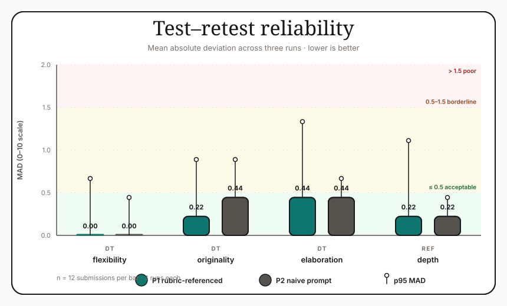
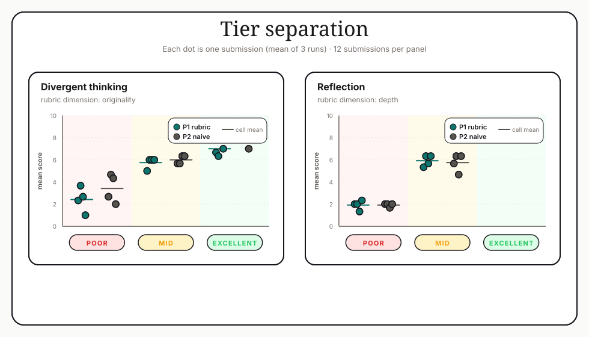

Reliability study figures
Three figures for §5.3.2. Styling matches the TOUGHSKILL theme (teal primary, warm secondary, hard drop shadow).



Three figures for §5.3.2. Styling matches the TOUGHSKILL theme (teal primary, warm secondary, hard drop shadow).

